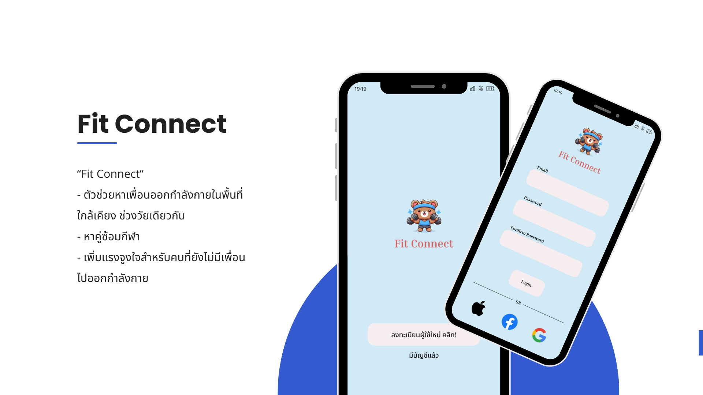
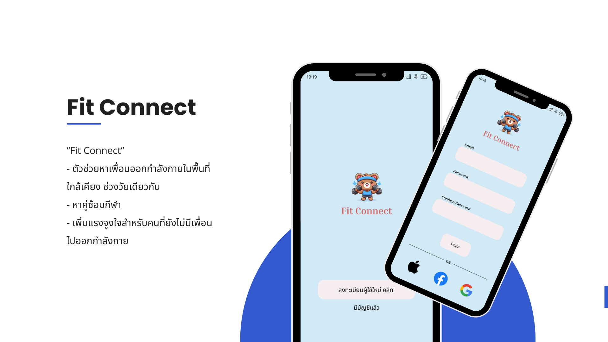

Fit Connect – แอปหาเพื่อนออกกำลังกาย
Empathy Map Canvas วิเคราะห์ปัญหาของผู้ใช้
เป็นส่วนหนึ่งในรายวิชา ict325-การจัดการนววัตกรรมในองค์กร
 

รายละเอียดโปรเจกต์
โปรเจกต์นี้พัฒนาแนวคิดแอปพลิเคชันเพื่อช่วยให้ผู้ใช้งานสามารถหาเพื่อนออกกำลังกายได้ง่ายขึ้น โดยใช้ Empathy Map Canvas วิเคราะห์ Pain Point เช่น การหาคู่ซ้อมยาก ไม่มีเพื่อนออกกำลังกายทำให้ไม่อยากออกกำลังกาย และเพิ่มความปลอดภัยด้วยระบบรีวิวและแชทภายในแอป
สิ่งที่ทำในโปรเจกต์นี้
- ออกแบบ UX/UI ด้วย Figma
- สร้าง Empathy Map และ Persona
- จัดทำ Prototype แบบ Interactive
- นำเสนอแนวทางพัฒนา MVP